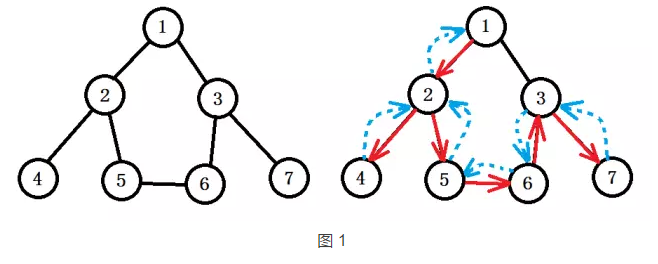
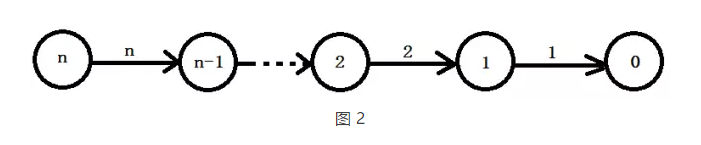
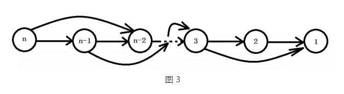
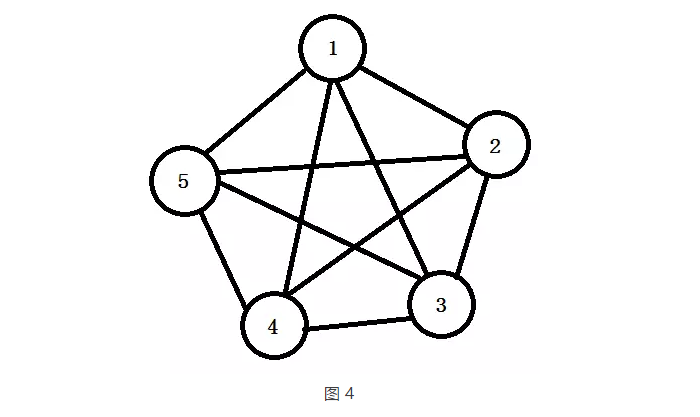

june,20th,2017
搜索入门
搜索入门
目录
一、 深度优先搜索 1、 DFS 2、基于DFS的记忆化搜索 3、基于DFS的剪枝 1）可行性剪枝 2）最优性剪枝 4、基于DFS的A* （迭代加深，IDA*）
二、广度优先搜索 1、BFS 2、基于BFS的A* 3、双向广搜
三、搜索题集整理
一、深度优先搜索
1、DFS
1)算法原理
深度优先搜索即 Depth First Search，是图遍历算法的一种。用一句话概括就是：“一直往下走，走不通回头，换条路再走，直到无路可走”。
DFS的具体算法描述为选择一个起始点v作为当前结点，执行如下操作：
a. 访问 当前结点，并且标记该结点已被访问，然后跳转到b； b. 如果存在一个和 当前结点 相邻并且尚未被访问的结点u，则将u设为 当前结点，继续执行a； c. 如果不存在这样的u，则进行回溯，回溯的过程就是回退 当前结点；
上述所说的当前结点需要用一个栈来维护，每次访问到的结点入栈，回溯的时候出栈（也可以用递归实现，更加方便易懂）。
如图1所示，对以下图以深度优先的方式进行遍历，假设起点是1，访问顺序为1 -> 2 -> 4，由于结点4没有未访问的相邻结点，所以这里需要回溯到2，然后发现2还有未访问的相邻结点5，于是继续访问2 -> 5 -> 6 -> 3 -> 7，这时候7回溯到3，3回溯到6，6回溯到5，5回溯到2，最后2回溯到起点1，1已经没有未访问的结点了，搜索终止，图中圆圈代表路点，红色箭头表示搜索路径，蓝色虚线表示回溯路径。
2)算法实现
深搜最简单的实现就是递归，写成伪代码如下：
def DFS(v):
visited[v] = true
dosomething(v)
for u in adjcent_list[v]:
if visited[u] is false:
DFS(u)其中dosomething表示访问时具体要干的事情，根据情况而定，并且DFS是允许有返回值的。
3) 基础应用
a. 求N的阶乘；
令f(N) = N!，那么有f(N) = N * f(N-1) （其中N>0）。由于满足递归的性质，可以认为是一个N个结点的图，结点 i (i >= 1 ) 到结点 i-1 有一条权值为i的有向边，从N开始深度优先遍历，遍历的终点是结点0，返回1(因为0! = 1)。如图2所示，N!的递归计算看成是一个深度优先遍历的过程，并且每次回溯的时候会将遍历的结果返回给上一个结点（这只是一个思想，并不代表这是求N!的高效算法）。
b. 求斐波那契数列的第N项；
令g(N) = g(N-1) + g(N-2)， (N > 2)，其中g(1) = g(2) = 1，同样可以利用图论的思想，从结点N向N-1和N-2分别引一条权值为1的有向边，每次求g(N)就是以N作为起点，对N进行深度优先遍历，然后将N-1和N-2回溯的结果相加作为N结点的值，即g(N)。
这里会带来一个问题，g(n)的计算需要用到g(n-1)和g(n-2)，而g(n-1)的计算需要用到g(n-2)和g(n-3)，所以我们发现g(n-2)被用到了两次，而且每个结点都存在这个问题，这样就使得整个算法的复杂度变成指数级了，为了规避这个问题，下面会讲到基于深搜的记忆化搜索。
c. 求N个数的全排列；
全排列的种数是N!，要求按照字典序输出。这是最典型的深搜问题。我们可以把N个数两两建立无向边（即任意两个结点之间都有边，也就是一个N个结点的完全图），然后对每个点作为起点，分别做一次深度优先遍历，当所有点都已经标记时输出当前的遍历路径，就是其中一个排列，这里需要注意，回溯的时候需要将原先标记的点的标记取消，否则只能输出一个排列。如果要按照字典序，则需要在遍历的时候保证每次遍历都是按照结点从小到大的方式进行遍历的。
4)高级应用
a. 枚举： 数据范围较小的的排列、组合的穷举；
b. 容斥原理： 利用深搜计算一个公式，本质还是做枚举；
c. 基于状态压缩的动态规划： 一般解决棋盘摆放问题，k进制表示状态，然后利用深搜进行状态转移；
d.记忆化搜索： 某个状态已经被计算出来，就将它cache住，下次要用的时候不需要重新求，此所谓记忆化。下面会详细讲到记忆化搜索的应用范围；
e.有向图强连通分量： 经典的Tarjan算法； 求解2-sat问题的基础；
f. 无向图割边割点和双连通分量： 经典的Tarjan算法；
g. LCA： 最近公共祖先递归求解；
h.博弈： 利用深搜计算SG值；
i.二分图最大匹配： 经典的匈牙利算法； 最小顶点覆盖、最大独立集、最小值支配集 向二分图的转化；
j.欧拉回路： 经典的圈套圈算法；
k. K短路： 依赖数据，数据不卡的话可以采用2分答案 + 深搜；也可以用广搜 + A*
l. 线段树 二分经典思想，配合深搜枚举左右子树；
m. 最大团 极大完全子图的优化算法。
n. 最大流 EK算法求任意路径中有涉及。
o. 树形DP： 即树形动态规划，父结点的值由各个子结点计算得出。
2、基于DFS的记忆化搜索
1)算法原理
上文中已经提到记忆化搜索，其实就是类似动态规划的思想，每次将已经计算出来的状态的值存储到数组中，下次需要的时候直接读数组中的值，避免重复计算。
来看个例子，如图5所示，图中的橙色小方块就是传说中的作者，他可以在一个N*M的棋盘上行走，但是只有两个方向，一个是向右，一个是向下（如绿色箭头所示），棋盘上有很多的金矿，走到格子上就能取走那里的金矿，每个格子的金矿数目不同（用蓝色数字表示金矿的数量），问作者在这样一个棋盘上最多可以拿到多少金矿。
我们用函数DFS(i, j)表示从(1, 1)到(i, j)可以取得金矿的最大值，那么状态转移方程 DFS(i, j) = v[i][j] + max{ DFS(i, j-1), DFS(i-1, j) }（到达(i, j)这个点的金矿最大值的那条路径要么是上面过来的，要么是左边过来的），满足递归性质就可以进行深度优先搜索了，于是遇到了和求斐波那契数列一样的问题，DFS(i, j)可能会被计算两次，每个结点都被计算两次的话复杂度就是指数级了。
所以这里我们可以利用一个二维数组，令D[i][j] = DFS(i, j)，初始化所有的D[i][j] = -1，表示尚未计算，每次搜索到(i, j)这个点时，检查D[i][j]的值，如果为-1，则进行计算，将计算结果赋值给D[i][j]；否则直接返回D[i][j]的值。
记忆化搜索虽然叫搜索，实际上还是一个动态规划问题，能够记忆化搜索的一般都能用动态规划求解，但是记忆化搜索的编码更加直观、易写。
3、基于DFS的剪枝
1) 算法原理
搜索的过程可以看作是从树根出发，遍历一棵倒置的树——搜索树的过程。而剪枝，顾名思义，就是通过某种判断，避免一些不必要的遍历过程，形象的说，就是剪去了搜索树中的某些“枝条”，故称剪枝（原话取自1999年OI国家集训队论文《搜索方法中的剪枝优化》（齐鑫））。如图6所示，它是一棵利用深度优先搜索遍历的搜索树，可行解（或最优解）位于黄色的叶子结点，那么根结点的最左边的子树完全没有必要搜索（因为不可能出解）。如果我们在搜索的过程中能够清楚地知道哪些子树不可能出解，就没必要往下搜索了，也就是将连接不可能出解的子树的那根“枝条”剪掉，图中红色的叉对应的“枝条”都是可以剪掉的。
好的剪枝可以大大提升程序的运行效率，那么问题来了，如何进行剪枝？我们先来看剪枝需要满足什么原则：
a. 正确性剪掉的子树中如果存在可行解（或最优解），那么在其它的子树中很可能搜不到解导致搜索失败，所以剪枝的前提必须是要正确；
b. 准确性剪枝要“准”。所谓“准”，就是要在保证在正确的前提下，尽可能多得剪枝。
c. 高效性剪枝一般是通过一个函数来判断当前搜索空间是否是一个合法空间，在每个结点都会调用到这个函数，所以这个函数的效率很重要。
剪枝大致可以分成两类：可行性剪枝、最优性剪枝（上下界剪枝）。
Kobe Bryant 3hous ago
good!Kobe Bryant 3hous ago
good!Kobe Bryant 3hous ago
good!Kobe Bryant 3hous ago
good!